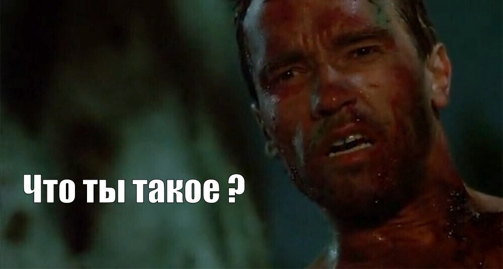

Метроном

Пробел — старт/стоп · T — tap tempo
Программы тренировок
Мои программы
Тренажёры
Тренажёр ритма (бета)
Слушает микрофон и показывает на главном экране, насколько точно ты попадаешь в долю в реальном времени. Нужны наушники — иначе микрофон будет ловить сам метроном.
—
Speed Trainer
Темп будет автоматически расти каждые N тактов.
Пропуск тактов
Метроном замолкает на M тактов после N сыгранных. Развивает внутренний счёт: между «слышимыми» отрезками держишь темп сам, и при возвращении клика проверяешь, не уехал ли.
Тема
Громкость
Звуки метронома
Задержка наушников
Если играешь в Bluetooth-наушниках, звук приходит с задержкой. Визуальный индикатор сдвигается позже, чтобы вспышка совпала с кликом в наушниках.
При старте читаем audioCtx.outputLatency. Определено:
Аналитика
Мы используем Яндекс.Метрику, чтобы видеть, какие функции работают, а какие нет. Никаких личных данных не собираем.
Сброс настроек
Вернёт тему, громкость, звуки и задержку наушников к значениям по умолчанию. Сохранённые ритмы и BPM-пресеты останутся.
Установить как приложение: меню браузера → «Установить» / «На экран Домой»